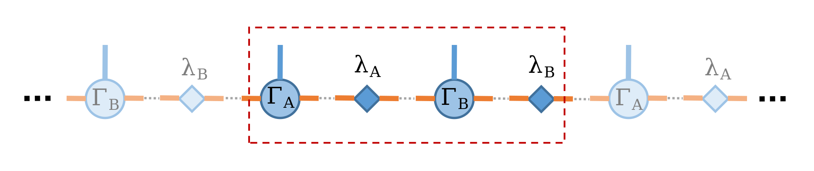
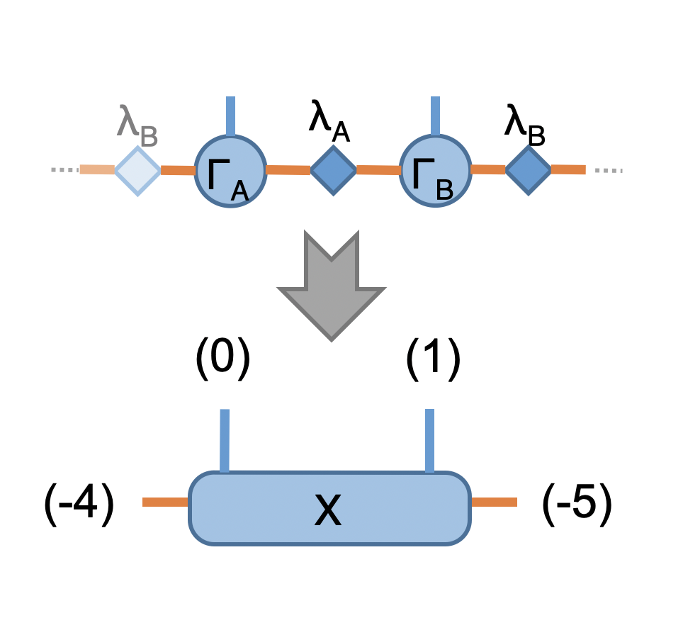
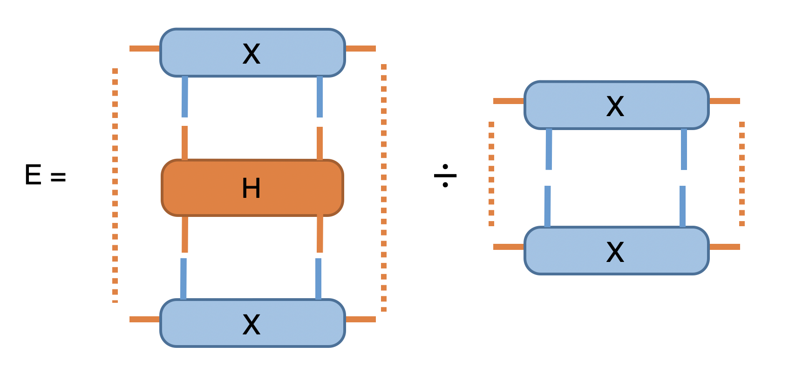
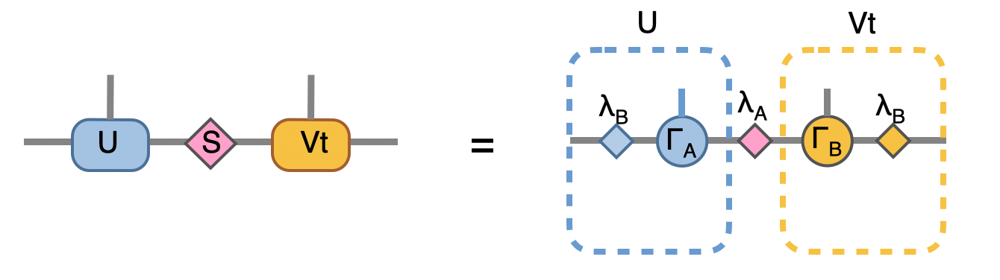
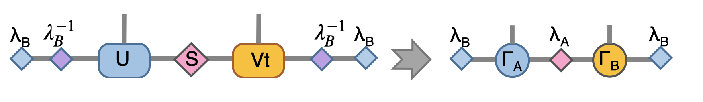
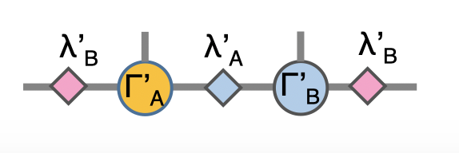

2. iTEBD¶
By : Hsu Ke, Kai-Hsin Wu
Time evolution block decimation is one of the most simple and sucessful Tensor network method [Vid07]. The core concept of this algorithm is to use the imaginary time evolution to find the best variational ansatz, usually in terms of Matrix product state (MPS).
Here, we use a 1D transverse field Ising model (TFIM) as a simple example to show how to implement iTEBD algorithm in Cytnx and get the infinite system size (variational) ground state.
Consider the Hamiltonain of TFIM:
where \(\sigma^{x,z}\) are the pauli matrices. The infinite size ground state can be represent by MPS as variational ansatz, where the virtual bonds dimension \(\chi\) effectively controls the number of variational parameters (shown as orange bonds), and the physical bonds dimension \(d\) is the real physical dimension (shown as the blue bonds. Here, for Ising spins \(d=2\)).
Because the system has translational invariant, thus it is legit to choose unit-cell consist with two sites, and the infinite system ground state can be represented with only two sites MPS with local tensors \(\Gamma_A\) and \(\Gamma_B\) associate with the schmit basis and \(\lambda_A\), \(\lambda_B\) are the diagonal matrices of Schmidt coefficients as shown in the following:
{kind=link}
Let’s first create this two-site MPS wave function (here, we set virtual bond dimension \(\chi = 10\) as example)
In python
1from cytnx import *
2
3chi = 10
4A = UniTensor([Bond(chi),Bond(2),Bond(chi)],rowrank=1,labels=[-1,0,-2])
5B = UniTensor(A.bonds(),rowrank=1,labels=[-3,1,-4])
6random.Make_normal(B.get_block_(),0,0.2)
7random.Make_normal(A.get_block_(),0,0.2)
8A.print_diagram()
9B.print_diagram()
10
11la = UniTensor([Bond(chi),Bond(chi)],rowrank=1,labels=[-2,-3],is_diag=True)
12lb = UniTensor([Bond(chi),Bond(chi)],rowrank=1,labels=[-4,-5],is_diag=True)
13la.put_block(ones(chi))
14lb.put_block(ones(chi))
15
16la.print_diagram()
17lb.print_diagram()
In c++
1#include "cytnx.hpp"
2using namespace cytnx;
3
4unsigned int chi = 10;
5auto A = UniTensor({Bond(chi),Bond(2),Bond(chi)},{-1,0,-2},1);
6auto B = UniTensor(A.bonds(),{-3,1,-4},1);
7random::Make_normal(B.get_block_(),0,0.2);
8random::Make_normal(A.get_block_(),0,0.2);
9A.print_diagram();
10B.print_diagram();
11
12auto la = UniTensor({Bond(chi),Bond(chi)},{-2,-3},1,Type.Double,Device.cpu,true);
13auto lb = UniTensor({Bond(chi),Bond(chi)},{-4,-5},1,Type.Double,Device.cpu,true);
14la.put_block(ones(chi));
15lb.put_block(ones(chi));
16
17la.print_diagram();
18lb.print_diagram();
Output >>
-----------------------
tensor Name :
tensor Rank : 3
block_form : false
is_diag : False
on device : cytnx device: CPU
-------------
/ \
-1 ____| 10 2 |____ 0
| |
| 10 |____ -2
\ /
-------------
-----------------------
tensor Name :
tensor Rank : 3
block_form : false
is_diag : False
on device : cytnx device: CPU
-------------
/ \
-3 ____| 10 2 |____ 1
| |
| 10 |____ -4
\ /
-------------
-----------------------
tensor Name :
tensor Rank : 2
block_form : false
is_diag : True
on device : cytnx device: CPU
-------------
/ \
-2 ____| 10 10 |____ -3
\ /
-------------
-----------------------
tensor Name :
tensor Rank : 2
block_form : false
is_diag : True
on device : cytnx device: CPU
-------------
/ \
-4 ____| 10 10 |____ -5
\ /
-------------
Here, we use random::Make_normal to initialize the elements of UniTensor A and B with normal distribution as initial MPS wavefuncion. The la, lb are the weight matrix (schmit coefficients), hence only diagonal elements contains non-zero values. Thus, we set is_diag=True to only store diagonal entries. We then initialize the elements to be all one for this weight matrices.
Note
In general, there are other ways you can set-up a trial initial MPS wavefunction, as long as not all the elements are zero.
2.1. Imaginary time evolution¶
To optimize the MPS for the ground state wave function, in TEBD, we perform imaginary time evolution with Hamiltonian \(H\) with evolution operator \(e^{\tau H}\). The manybody Hamiltonian is then decomposed into local two-sites evolution operator (or sometimes also called gate in quantum computation language) via Trotter-Suzuki decomposition, where \(U = e^{\tau H} \approx e^{\delta \tau H_{a}}e^{\delta \tau H_{b}} \cdots = U_a U_b\), \(U_{a,b} = e^{\delta \tau H_{a,b}}\) are the local evolution operators with \(H_a\) and \(H_b\) are the local two sites operator:
This is equivalent as acting theses two-site gates consecutively on the MPS, which in terms of tensor notation looks like following Figure(a):

Since we represent this infinite system MPS using the translational invariant, the Figure(a) can be further simplified into two step. First, acting \(U_a\) as shown in Figure(1) then acting \(U_b\) as shown in Figure(2). This two procedures then repeat until the energy is converged.
Here, let’s construct this imaginary time evolution operator with parameter \(J=-1\), \(H_x = -0.3\) and (imaginary) time step \(\delta \tau = 0.1\)
In python
1J = -1.0
2Hx = -0.3
3dt = 0.1
4
5## Create single site operator
6Sz = physics.pauli('z').real()
7Sx = physics.pauli('x').real()
8I = eye(2)
9print(Sz)
10print(Sx)
11
12
13## Construct the local Hamiltonian
14TFterm = linalg.Kron(Sx,I) + linalg.Kron(I,Sx)
15ZZterm = linalg.Kron(Sz,Sz)
16H = Hx*TFterm + J*ZZterm
17print(H)
18
19
20## Build Evolution Operator
21eH = linalg.ExpH(H,-dt) ## or equivantly ExpH(-dt*H)
22eH.reshape_(2,2,2,2)
23U = UniTensor(eH,2)
24U.print_diagram()
In c++
1double J = -1.0;
2double Hx = -0.3;
3double dt = 0.1;
4
5// Create single site operator
6auto Sz = physics::pauli('z').real();
7auto Sx = physics::pauli('x').real();
8auto I = eye(2);
9cout << Sz << endl;
10cout << Sx << endl;
11
12
13// Construct the local Hamiltonian
14auto TFterm = linalg::Kron(Sx,I) + linalg::Kron(I,Sx);
15auto ZZterm = linalg::Kron(Sz,Sz);
16auto H = Hx*TFterm + J*ZZterm;
17cout << H << endl;
18
19
20// Build Evolution Operator
21// [Note] eH is cytnx.Tensor and U is UniTensor.
22auto eH = linalg::ExpH(H,-dt); //or equivantly ExpH(-dt*H)
23eH.reshape_(2,2,2,2);
24auto U = UniTensor(eH,2);
25U.print_diagram();
Output>>
Total elem: 4
type : Double (Float64)
cytnx device: CPU
Shape : (2,2)
[[1.00000e+00 0.00000e+00 ]
[0.00000e+00 -1.00000e+00 ]]
Total elem: 4
type : Double (Float64)
cytnx device: CPU
Shape : (2,2)
[[0.00000e+00 1.00000e+00 ]
[1.00000e+00 0.00000e+00 ]]
Total elem: 16
type : Double (Float64)
cytnx device: CPU
Shape : (4,4)
[[-1.00000e+00 3.00000e-01 3.00000e-01 0.00000e+00 ]
[3.00000e-01 1.00000e+00 0.00000e+00 3.00000e-01 ]
[3.00000e-01 0.00000e+00 1.00000e+00 3.00000e-01 ]
[0.00000e+00 3.00000e-01 3.00000e-01 -1.00000e+00 ]]
-----------------------
tensor Name :
tensor Rank : 4
block_form : false
is_diag : False
on device : cytnx device: CPU
-------------
/ \
0 ____| 2 2 |____ 2
| |
1 ____| 2 2 |____ 3
\ /
-------------
Note
Since \(U_a\) and \(U_b\) have the same content(matrix elements) but acting on different sites, we only need to define a single UniTensor.
Here as a simple example, we directly convert a cytnx.Tensor to cytnx.UniTensor, which we don’t impose any bra-ket constrain (direction of bonds). In general, it is also possible to give bond direction (which we refering to tagged) that constrain the bonds to be more physical. See Github example/iTEBD/iTEBD_tag.py for demonstration.
In general, the accurate ground state can be acquired with a higher order Trotter-Suzuki expansion, and with decreasing \(\delta \tau\) along the iteraction. (See [Vid07] for further details), Here, for demonstration, we use fixed value of \(\delta \tau\).
Tip
Here, physics.pauli returns complex type cytnx.Tensor. Since we know pauli-z and pauli-x should be real, we use .real() to get the real part.
2.2. Update procedure¶
Now we have prepared the initial trial wavefunction in terms of MPS with two sites unit cell and the time evolution operator, we are ready to use the aformentioned scheme to find the (variational) ground state MPS. At the beginning of each iteration, we evaluate the energy expectation value \(\langle \psi | H | \psi \rangle / \langle \psi | \psi \rangle\), and check the convergence, the network is straightforward:
 {kind=link}
{kind=link}
In python
1A.set_labels([-1,0,-2])
2B.set_labels([-3,1,-4])
3la.set_labels([-2,-3])
4lb.set_labels([-4,-5])
5
6## contract all
7X = cytnx.Contract(cytnx.Contract(A,la),cytnx.Contract(B,lb))
8#X.print_diagram()
9lb.set_label(1,new_label=-1)
10X = cytnx.Contract(lb,X)
11
12Xt = X.clone()
13
14## calculate norm and energy for this step
15# Note that X,Xt contract will result a rank-0 tensor, which can use item() toget element
16XNorm = cytnx.Contract(X,Xt).item()
17XH = cytnx.Contract(X,H)
18XH.set_labels([-4,-5,0,1])
19XHX = cytnx.Contract(Xt,XH).item() ## rank-0
20E = XHX/XNorm
21
22## check if converged.
23if(np.abs(E-Elast) < CvgCrit):
24 print("[Converged!]")
25 break
26print("Step: %d Enr: %5.8f"%(i,Elast))
27Elast = E
In c++
1A.set_labels({-1,0,-2});
2B.set_labels({-3,1,-4});
3la.set_labels({-2,-3});
4lb.set_labels({-4,-5});
5
6
7// contract all
8UniTensor X = cyx::Contract(cyx::Contract(A,la),cyx::Contract(B,lb));
9lb.set_label(1,-1);
10X = cyx::Contract(lb,X);
11
12UniTensor Xt = X.clone();
13
14//> calculate norm and energy for this step
15// Note that X,Xt contract will result a rank-0 tensor, which can use item() toget element
16Scalar XNorm = cyx::Contract(X,Xt).item();
17UniTensor XH = cyx::Contract(X,H);
18
19XH.set_labels({-4,-5,0,1});
20Scalar XHX = cyx::Contract(Xt,XH).item();
21double E = double(XHX/XNorm);
22
23//> check if converged.
24if(abs(E-Elast) < CvgCrit){
25 cout << "[Converged!]" << endl;
26 break;
27}
28cout << "Step: " << i << "Enr: " << Elast << endl;
29Elast = E;
in the next step we perform the two-sites imaginary time evolution, using the operator (or “gate”) eH we defined above:

we also performed SVD for the XeH here, this put the MPS into mixed canonical form and have a Schimit decomposition of the whole state where the singular values are simply the Schimit coefficients. The Svd_truncate is called such that the intermediate bonds with label (-6) and (-7) are properly truncate to the maximum virtual bond dimension chi.
In python
1XeH = cytnx.Contract(X,eH)
2XeH.permute_([-4,2,3,-5],by_label=True)
3
4XeH.set_rowrank(2)
5la,A,B = cytnx.linalg.Svd_truncate(XeH,chi)
6Norm = cytnx.linalg.Norm(la.get_block_()).item()
7la *= 1./Norm
In c++
1//> Time evolution the MPS
2UniTensor XeH = cyx::Contract(X,eH);
3XeH.permute_({-4,2,3,-5},-1,true);
4
5XeH.set_Rowrank(2);
6vector<UniTensor> out = cyx::xlinalg::Svd_truncate(XeH,chi);
7la = out[0]; A = out[1]; B = out[2];
8Scalar Norm = cytnx::linalg::Norm(la.get_block_()).item();
9la *= 1./Norm; //normalize
Note that we directly store the SVD results into A, B and la, this can be seen by comparing to our original MPS configuration:
{kind=link}
to recover to orignial form, we put \(\lambda_B^{-1} \lambda_B\) on both ends, which abosorb two \(\lambda_B^{-1}\):
{kind=link}
Now we have the envolved \(\Gamma_A\), \(\Gamma_B\) and \(\lambda_A\). Using the translation symmetry, we shift the whole chain to left by just exchange the \(Gamma\) and \(\lambda\) pair and arrived at the new MPS for next iteration to update B-A sites using \(U_b\).
{kind=link}
In python
1# again, but A' and B' are updated
2A.set_labels([-1,0,-2]); A.set_rowrank(1);
3B.set_labels([-3,1,-4]); B.set_rowrank(1);
4
5lb_inv = 1./lb
6
7lb_inv.set_labels([7, -1]) # -1 to contract with A, 7 is arbitary here.
8A = cytnx.Contract(lb_inv,A)
9
10lb_inv.set_labels([-4, 8]) # -4 to contract with B, 8 is arbitary here.
11B = cytnx.Contract(B,lb_inv)
12
13# translation symmetry, exchange A and B site
14A,B = B,A
15la,lb = lb,la
In c++
1A.set_labels({-1,0,-2}); A.set_Rowrank(1);
2B.set_labels({-3,1,-4}); B.set_Rowrank(1);
3
4UniTensor lb_inv = 1./lb;
5
6lb_inv.set_labels({7, -1}); // -1 to contract with A, 7 is arbitary here.
7A = cyx.Contract(lb_inv,A);
8
9lb_inv.set_labels({-4, 8}) // -4 to contract with B, 8 is arbitary here.
10B = cyx.Contract(B,lb_inv);
11
12A = cyx::Contract(lb_inv,A);
13B = cyx::Contract(B,lb_inv);
14
15
16//> translation symm, exchange A and B site
17UniTensor tmp = A;
18A = B; B = tmp;
19
20tmp = la;
21la = lb; lb = tmp;
Let’s put everything together in a loop for iteration:
In python
1for i in range(10000):
2
3 A.set_labels([-1,0,-2])
4 B.set_labels([-3,1,-4])
5 la.set_labels([-2,-3])
6 lb.set_labels([-4,-5])
7
8 ## contract all
9 X = cytnx.Contract(cytnx.Contract(A,la),cytnx.Contract(B,lb))
10 #X.print_diagram()
11 lb.set_label(idx=1,new_label=-1)
12 X = cytnx.Contract(lb,X)
13
14 ## X =
15 # (0) (1)
16 # | |
17 # (-4) --lb-A-la-B-lb-- (-5)
18 #
19 #X.print_diagram()
20
21 Xt = X.clone()
22
23 ## calculate norm and energy for this step
24 # Note that X,Xt contract will result a rank-0 tensor, which can use item() toget element
25 XNorm = cytnx.Contract(X,Xt).item()
26 XH = cytnx.Contract(X,H)
27 XH.set_labels([-4,-5,0,1])
28 XHX = cytnx.Contract(Xt,XH).item() ## rank-0
29 E = XHX/XNorm
30
31 ## check if converged.
32 if(np.abs(E-Elast) < CvgCrit):
33 print("[Converged!]")
34 break
35 print("Step: %d Enr: %5.8f"%(i,Elast))
36 Elast = E
37
38 ## Time evolution the MPS
39 XeH = cytnx.Contract(X,eH)
40 XeH.permute_([-4,2,3,-5],by_label=True)
41 #XeH.print_diagram()
42
43 ## Do Svd + truncate
44 ##
45 # (2) (3) (2) (3)
46 # | | => | + (-6)--s--(-7) + |
47 # (-4) --= XeH =-- (-5) (-4)--U--(-6) (-7)--Vt--(-5)
48 #
49
50 XeH.set_rowrank(2)
51 la,A,B = cytnx.linalg.Svd_truncate(XeH,chi)
52 Norm = cytnx.linalg.Norm(la.get_block_()).item()
53 la *= 1./Norm
54 #A.print_diagram()
55 #la.print_diagram()
56 #B.print_diagram()
57
58
59 # de-contract the lb tensor , so it returns to
60 #
61 # | |
62 # --lb-A'-la-B'-lb--
63 #
64 # again, but A' and B' are updated
65 A.set_labels([-1,0,-2]); A.set_rowrank(1);
66 B.set_labels([-3,1,-4]); B.set_rowrank(1);
67
68 #A.print_diagram()
69 #B.print_diagram()
70
71 lb_inv = 1./lb
72 A = cytnx.Contract(lb_inv,A)
73 B = cytnx.Contract(B,lb_inv)
74
75 #A.print_diagram()
76 #B.print_diagram()
77
78 # translation symmetry, exchange A and B site
79 A,B = B,A
80 la,lb = lb,la
In c++
1//> Evov:
2double Elast = 0;
3
4for(unsigned int i=0;i<10000;i++){
5 A.set_labels({-1,0,-2});
6 B.set_labels({-3,1,-4});
7 la.set_labels({-2,-3});
8 lb.set_labels({-4,-5});
9
10
11 // contract all
12 UniTensor X = cyx::Contract(cyx::Contract(A,la),cyx::Contract(B,lb));
13 lb.set_label(1,-1);
14 X = cyx::Contract(lb,X);
15
16 UniTensor Xt = X.clone();
17
18 //> calculate norm and energy for this step
19 // Note that X,Xt contract will result a rank-0 tensor, which can use item() toget element
20 double XNorm = cyx::Contract(X,Xt).item<double>();
21 UniTensor XH = cyx::Contract(X,H);
22
23 XH.set_labels({-4,-5,0,1});
24 double XHX = cyx::Contract(Xt,XH).item<double>();
25 double E = XHX/XNorm;
26
27 //> check if converged.
28 if(abs(E-Elast) < CvgCrit){
29 cout << "[Converged!]" << endl;
30 break;
31 }
32 cout << "Step: " << i << "Enr: " << Elast << endl;
33 Elast = E;
34
35 //> Time evolution the MPS
36 UniTensor XeH = cyx::Contract(X,eH);
37 XeH.permute_({-4,2,3,-5},-1,true);
38
39 //> Do Svd + truncate
40 XeH.set_Rowrank(2);
41 vector<UniTensor> out = cyx::xlinalg::Svd_truncate(XeH,chi);
42 la = out[0]; A = out[1]; B = out[2];
43 double Norm = cytnx::linalg::Norm(la.get_block_()).item<double>();
44 la *= 1./Norm; //normalize
45
46
47 // de-contract the lb tensor , so it returns to
48 //
49 // | |
50 // --lb-A'-la-B'-lb--
51 //
52 // again, but A' and B' are updated
53 A.set_labels({-1,0,-2}); A.set_Rowrank(1);
54 B.set_labels({-3,1,-4}); B.set_Rowrank(1);
55
56 UniTensor lb_inv = 1./lb;
57 A = cyx::Contract(lb_inv,A);
58 B = cyx::Contract(B,lb_inv);
59
60
61 //> translation symm, exchange A and B site
62 UniTensor tmp = A;
63 A = B; B = tmp;
64
65 tmp = la;
66 la = lb; lb = tmp;
67}
G. Vidal. Classical simulation of infinite-size quantum lattice systems in one spatial dimension. Phys. Rev. Lett., 98:070201, Feb 2007. URL: https://link.aps.org/doi/10.1103/PhysRevLett.98.070201, doi:10.1103/PhysRevLett.98.070201.